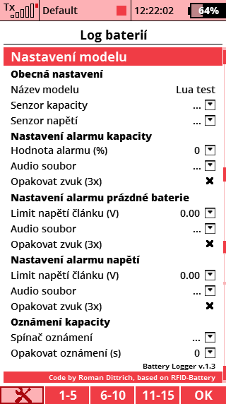
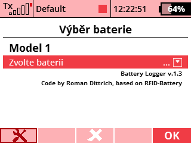

Log baterií


Popis
Aplikace na logování cyklů baterií, zobrazení (+ hlášení) zbývající kapacity v % a nastavení relevantních alarmů. Logger obsahuje dva různé formuláře (menu s nastavením). Prvním je menu "Log baterií", které se nachází v menu aplikací po aktivaci uživatelské aplikace. Zde se nastavují obecné parametry aplikace pro zvoleny model a zároveň i jednotlivé baterie pro model. Druhé menu - "Výběr baterie" se nachází v hlavním menu a slouží pro výběr baterie před letem (použitím modelu).
- Jedna aplikace pro všechny modely.
- Všechna nastavení jsou specifická pro zvolený model.
- Ke každému modelu lze uložit az 15 baterií. Každá baterie ma název, počet článků, kapacitu a počet cyklů.
- Automatická detekce připojení vybité baterie. Lze nastavit výši napětí pro alarm, zvuk a počet opakování. Pro vypnutí tohoto alarmu je nutno jej nastavit na 0.00V.
- Alarm kapacity baterie. Lze nastavit zbývající % kapacity baterie pro alarm, zvuk a počet jeho opakovani (1x nebo 3x). Nastavením na 0% je alarm efektivně vypnut.
- Alarm nízkého napětí baterie. Možnosti nastavení stejné, jako u předchozích alarmů. Tento slouží primárně jako pojistka pro případ, že by reálná kapacita baterie neodpovídala kapacitě vložené do aplikace. Pro vypnuti tohoto alarmu je nutno jej nastavit na 0.00V.
- Oznámení zbývající kapacity baterie s možností nastavení periody opakování.
- Logování proběhlých letů do csv souboru (nabitá baterie musí být připojena alespoň 30s a mít nenulový odběr mAh, aby došlo k zalogování).
Založeno na kódu RFID-Battery od Tera z RC-Thoughts.
Použití
Po úvodním nastavení aplikace stači před každým letem v menu "Výběr baterie" zvolit aktuálně používanou baterii. Aplikace v telemetrickem okně zobrazí informace o baterii a dle nastavení upozorní na nizké napětí, kapacitu atd. Po ukončení letu dojde k jeho zalogování do csv souboru a deselekci aktuální baterie.
Zdrojové kódy můžete stáhnout z oficiálního repozitáře zde.